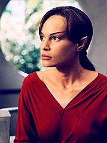
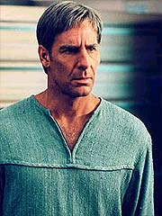
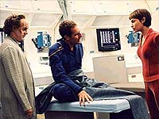
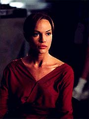

|
MANCHETE
DO EPISDIO
Segmento
brilhante acerta em cheio
na histria e na sensibilidade do tema
Episdio
anterior | Prximo
episdio
Sinopse:
Archer acorda em sua cama na nave, que est sofrendo um ataque. Ele corre para a ponte, e T'Pol, que est no comando, ordena aos guardas que o tirem de l. Archer e a tripulao da ponte olham para a tela, onde acontece um confronto de naves de guerra Xindi. Enquanto ele olha, a arma Xindi se aproxima da Terra e dispara um raio de energia, fazendo com que o planeta exploda.

Em seguida, Archer acorda em sua cama, muito mais velho. Ele levanta e vai ao espelho. O capito fica chocado ao ver sua pele enrugada e seu cabelo grisalho. Ele vai cozinha, e v T'Pol fazendo caf da manh. Ela pede que ele se sente e conta que 12 anos atrs eles estavam num corredor da Enterprise. Uma anomalia veio na direo deles, destruindo placas e prendendo T'Pol sob um destroo de metal. Enquanto Archer tenta tirar o destroo de cima dela, outra anomalia vem pelo corredor, atingindo o capito e colocando-o a nocaute. Ele acorda na enfermaria, e Phlox revela que ele esteve num coma por trs dias, dos quais Archer no lembra nada. Phlox tambm diz que parasitas atacaram e se instalaram no crebro dele, tornando-o inapto a formar novas memrias de longo prazo.
Conforme as semanas passam, Phlox fracassa em encontrar uma cura para a infeco, e a Frota Estelar decide afastar Archer do comando, dando a T'Pol uma promoo de campo como capit.
Os Xindi descobrem que a Enterprise est se aproximando de onde a arma est sendo construda e enviam duas naves para atacar a NX-01 e abord-la. A nave seriamente danificada. Numa tentativa desesperada de destruir as naves, T'Pol acerta uma das naves Xindis chocando-a com outra, que est atracada ao lado da Enterprise. A nacele de estibordo perdida no processo.
Phlox reporta a T'Pol a morte de 13 tripulantes, alm de 22 feridos, alguns em estado grave. Reed diz que 9 prisioneiros Xindis foram capturados. Trip diz a ela que ser preciso reconstruir as bobinas de dobra destrudas e que isso levar seis meses; por ora, a nave s pode viajar a dobra 1,7.
De volta ao futuro, T'Pol diz a Archer que os Xindis tiveram sucesso ao acionar a arma e destruir a Terra. Mas no pararam por a; atacaram todas as colnias terrestres que pudessem encontrar. Atualmente, h menos de 6.000 humanos vivos. Os sobreviventes dos ataques precisavam de um refgio, e chegaram ao sistema em comboios, com a Enterprise liderando um deles. Eles esto atualmente na colnia do quinto planeta do sistema Ceti Alfa, que longe da Extenso. A maioria da tripulao ainda est a bordo da Enterprise, patrulhando o sistema.
A caminho de Ceti Alfa 5, Soval visita T'Pol para convenc-la a retornar a Vulcano com Archer, onde mdicos Vulcanos podero ajud-lo. T'Pol e Soval discutem sobre como os Vulcanos atrapalharam os humanos no desenvolvimento da tecnologia de dobra. Ela diz a ele que se eles no tivessem feito isso, talvez os humanos tivessem conseguido evitar essa atrocidade. Soval parte, e T'Pol fica na Enterprise.
Aps um ano, o comboio chega a Ceti Alfa, e T'Pol desiste de sua carreira para cuidar de Archer, uma vez que ele ficar melhor no planeta. No futuro, T'Pol revela a Archer que a relao dos dois evoluiu muito e que ela sabe muito sobre ele, inclusive sobre seu passado.
Phlox vai visit-los e conta a Archer as boas notcias. Aps uma dcada de pesquisa em Denobula, ele desenvolveu uma cura para os parasitas que ir exigir grandes quantidades de energia, que s poderiam ser fornecidas por um reator de dobra. Archer, T'Pol e Phlox ento voltam Enterprise, e Archer descobre que Trip j capito h nove anos, e que Reed foi promovido a capito da Intrepid.

Enquanto Phlox executa o procedimento na engenharia, na ponte Reed descobre que h uma nave os seguindo. Eles a desabilitam e trazem o piloto a bordo. Trip e Reed o interrogam, e ele confessa que foi pago para seguir Phlox se ele algum dia deixasse Denobula. Trip ento vai enfermaria, onde Phlox e T'Pol dizem a ele que o primeiro agrupamento de parasitas que eles destruram no aparece em nenhuma das imagens tiradas do crebro de Archer nos ltimos 12 anos. Em outras palavras, ao destruir os parasitas, a linha do tempo poderia ser mudada, e o futuro que eles agora experimentam no existir. Trip se recusa a deixar que eles executem o resto do procedimento, para concentrar a energia na batalha frente --seis navez Xindis entraram no sistema.
Eles comeam a disparar nas naves Xindis. Duas quebram formao e seguem a Enterprise. As outras quatro seguem na direo do planeta. A NX-01 desabilita as duas naves e as quatro restantes se voltam para confront-la.
Na enfermaria, Archer levanta da biocama e dispara na direo da ponte, com T'Pol indo logo atrs. Aps descobrirem que no podem chegar ponte, destruda durante a batalha, Archer e T'Pol vo engenharia para completar o experimento. Quando chegam l, encontram Phlox, que diz que a cmara foi destruda. Archer decide iniciar uma imploso subespacial com os motores de dobra, que ir destruir a nave, mas tambm matar os parasitas. Phlox e T'Pol o ajudam, mas todos so atacados por tropas Xindis que invadiram a nave. Archer leva vrios tiros, mas consegue iniciar a imploso.
O capito acorda na enfermaria, com Phlox perguntando sobre como se sente. O mdico diz que ele sofreu uma concusso leve e precisa descansar. T'Pol d a ele um padd com o filme "O Beb de Rosemary", traz um travesseiro e apaga as luzes.
Comentrios:
"Twilight" um episdio que pode facilmente figurar numa lista dos melhores de
Jornada nas Estrelas em todos os tempos. O roteiro de Mike Sussman to redondinho, mas to redondinho, que at o uso do famigerado "boto reset" parece se sustentar aqui.
A histria perfeita de todos os ngulos. Enquanto simples premissa para um enredo de fico cientfica, trata-se de uma preciosidade. Aproveitando-se das j recorrentes turbulncias espao-temporais da Extenso Dlfica, o roteiro nos apresenta uma razo convincente para justificar que Archer adquira uma doena cerebral devastadora que o torna incapaz de comandar a Enterprise.

A partir desse evento, tudo d errado na importante misso da NX-01. T'Pol promovida a capito, mas os esforos combinados de toda a tripulao so capazes de evitar que os Xindis acionem sua arma e destruam a Terra. Depois dela, foi a vez de as colnias espaciais humanas serem erradicadas. Em doze anos, h apenas um punhado de humanos vivos no Universo.
Desse ponto de vista, a histria j interessante --embora obviamente exija o "boto reset". O que, no entanto, torna o segmento verdadeiramente especial o uso que dado aos personagens. Em primeiro lugar, Archer no tem uma disfuno qualquer. Ele sofre danos sinpticos no hipocampo (uma regio do crebro) que o impedem de registrar novas memrias de longo prazo. Para todos os efeitos, o capito sofre de uma verso futurista do mal de Alzheimer, em seu estado inicial (eventualmente, o mal de Alzheimer causa demncia e morte; no caso de Archer, ao que parece s a funo da memria afetada).
Com sua amnsia seletiva, o capito passa a ser uma pea praticamente intil a bordo da Enterprise. Ele sempre precisa ser relembrado dos ltimos eventos, desde o momento em que foi infectado pelos parasitas. Comea a se sentir desconfortvel, mas luta bravamente para ser til e ajudar a Enterprise em sua misso --no que isso resulte em mais que embaraos, para o constrangimento de todos.

A narrativa sensvel e envolvente, fazendo com que os telespectadores sofram "na pele" o que Archer est sentindo. um drama extremamente humano --algo que existe na vida real, na forma do mal de Alzheimer-- que conduzido com maestria pelo roteiro. Tambm interessante --e justificvel-- a deciso final de T'Pol de permanecer numa pequena colnia, aps a destruio da Terra, para cuidar de Archer. Faz todo o sentido, no contexto do episdio, e oferece uma justificativa muito melhor para a aproximao dos personagens do que o tosco
"A Night in Sickbay", que tentou fazer a mesma coisa na temporada passada.
Sem dvida, os personagens de Archer e T'Pol so os mais beneficiados pela trama. uma das poucas oportunidades que temos de observar esses personagens evoluindo e realmente sofrendo, com coisas com as quais podemos nos identificar. E, apesar do "boto reset", a audincia acaba saindo do episdio com um conhecimento muito mais profundo e prximo da vida interior dessas duas pessoas.
Em termos de estrutura de roteiro, Sussman d uma aula de como usar todos os recursos que os escritores de Enterprise adoram do jeito apropriado. Um teaser curto e arrebatador, em que temos nada menos que a destruio da Terra, seqncias bem-organizadas e naturalmente fluidas de flashbacks (a coisa to bem-feita que difcil localizar em que "poca" se passa o episdio --a rigor, a coisa acontece em vrios tempos ao mesmo tempo, uma qualidade extraordinria!) e um uso inteligente do "boto reset" para contar um drama humano realista. No d para pedir mais.
O episdio reminiscente de outros segmentos consagrados de "boto reset", como
"Cause and Effect" e "All Good Things...", de
A Nova Gerao, mas tem suficientes motivaes para se firmar como algo mais do que uma reciclagem. O tema do envelhecimento e da senilidade raras vezes foi tratado com tanta vitalidade, inteligncia e sutileza.
Uma outra raridade: os efeitos especiais esto a servio da trama! Normalmente, algumas seqncias em
Enterprise do a impresso de que foram escritas justamente porque renderia boas imagens de efeitos especiais --aquela sensao do escritor de que "isso vai ficar muito legal na tela, ento vamos incluir no roteiro". Aqui, o que acontece justamente o contrrio --e o correto: so os elementos do enredo que naturalmente motivam os efeitos especiais.
O resultado um segmento mais enxuto em termos de imagens geradas por computador. Em compensao, cada uma das seqncias de efeitos tem tamanha justificativa que no existe essa sensao de que algo foi includo na histria porque seria legal. Mais um ponto para o roteiro.
Algumas cenas, individualmente, tambm so tocantes e tm toques de brilhantismo. O poder da interpretao de Bakula quando T'Pol conta a ele que a Terra e a imensa maioria dos seres humanos esto perdidos, e uns poucos sobreviventes, foragidos, arrebatador. E lgrimas tambm incorrem quando Archer, j velho, levado de volta Enterprise e encontra seus antigos comandados.
Por fim, temos uma concluso convincente e dramtica, em que Archer curado (e no soa falso que ele seja curado tambm "no passado", uma vez que as criaturas infecciosas vivem num estado de contnuo fluxo espao-temporal) numa batalha que leva destruio da Enterprise e acorda, 12 anos antes, se recuperando de uma simples pancada na cabea.
A coisa to inteligente que podemos nos perguntar o que afinal vimos. Foi tudo um sonho de Archer, inconsciente o tempo todo na enfermaria da Enterprise? Ou foi algo que realmente aconteceu e depois foi expurgado da linha temporal, como tantas vezes vimos antes ocorrer em
Jornada nas Estrelas?
A resposta imediata do telespectador , evidentemente, a segunda. Mas pense de novo: o fato de que Archer faz vrios pedidos a T'Pol e chega at a dizer que ela daria uma boa enfermeira faz crer que, mesmo que seja num nvel subconsciente, ele tenha guardado alguma memria dos eventos. Isso s seria possvel caso toda a ao tivesse acontecido apenas na cabea dele, no numa linha do tempo alternativa que, naquele momento, nem havia acontecido...
Qual a verdade ento, afinal? E essa s a cereja no bolo de
"Twilight", um episdio legitimamente brilhante.
Citaes:
Archer - "It couldn't have been easy for you, telling me the same story over and over again for 12 years."
("No deve ter sido fcil para voc, me contar a mesma histria de novo e de novo por 12 anos.")
T'Pol - "I don't always tell it in detail."
("Eu nem sempre conto em detalhes.")
Archer - "I hope I've told you this before, but I'm very grateful for everything you've done for me."
("Espero j ter dito isso antes, mas sou muito grato por tudo que voc fez por
mim.")
Trivia:
 As filmagens do episdio terminaram em 19 de setembro de 2003, aps sete dias, interrompidos pela morte do primeiro diretor assistente Jerry Fleck.
As filmagens do episdio terminaram em 19 de setembro de 2003, aps sete dias, interrompidos pela morte do primeiro diretor assistente Jerry Fleck.
Robert Duncan McNeill, diretor do
episdio, disse: "Isso saltar no futuro com Archer e ver algo que afeta a linha do tempo, assim como o passado e toda a sorte de outras coisas, em termos das grandes questes com a humanidade e a civilizao, e tambm das relaes interpessoais. Ns damos uma olhada em 20 ou 30 anos l na frente".
Mike Sussman tambm falou do segmento: "'Archer no se lembrando de nada' era realmente a idia bsica para o episdio. A noo central era a de que algum com o mal de Alzheimer, de algum modo, poderia ser visto como um viajante do tempo".
Gary Graham faz mais uma apario como o embaixador Soval.
Ficha
tcnica:
Escrito por Michael Sussman
Direo de Robert Duncan McNeill
Exibido em 5/11/2003
Produo:
060
Elenco:
Scott
Bakula como Jonathan Archer
Jolene Blalock como
T'Pol
John Billingsley
como Phlox
Anthony Montgomery
como Travis Mayweather
Connor Trinneer como
Charlie 'Trip' Tucker III
Dominic Keating como
Malcolm Reed
Linda Park como Hoshi Sato
Elenco convidado:
Gary Graham como Soval
Brett Rickaby como Yedrin Koss
Richard Anthony Crenna como segurana
Episdio
anterior | Prximo
episdio
|